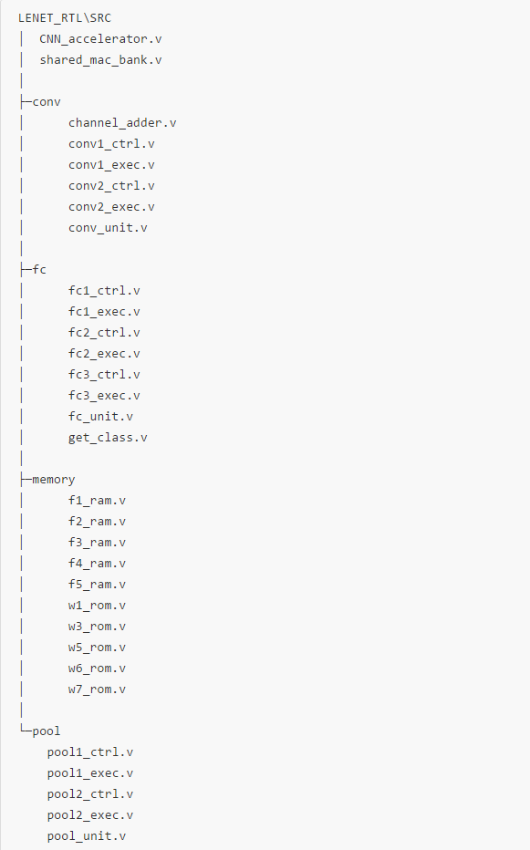
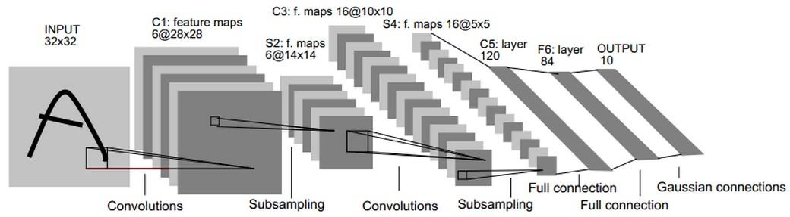
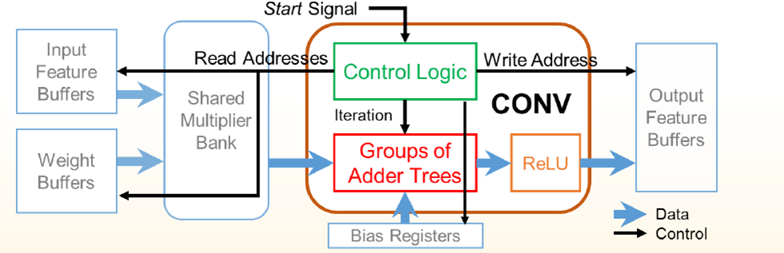
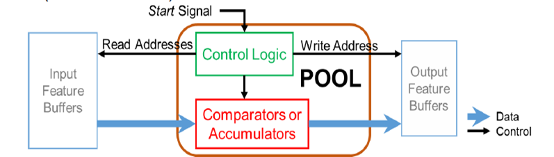
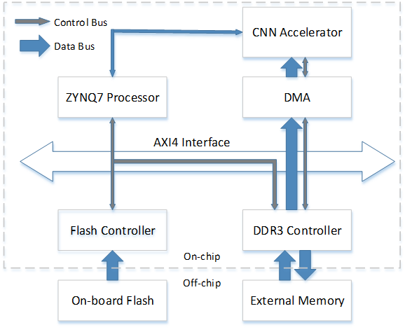
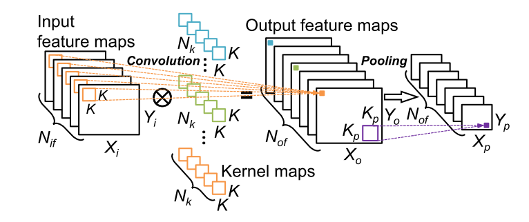
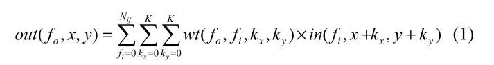

LeNET的RTL实现

CNN_accelerator.v是加速器的顶层； shared_mac_bank.v是共享的DSP块的阵列；
conv文件夹下是卷积层(Convolution)的相应模块。
其中以conv1开头的代表 第一层卷积，以conv2开头的代表 第二层卷积；ctrl代表控制，exec代表执行即数据流。 conv_unit.v 和 channel_adder.v是数据流中的处理单元。
pool文件夹下是池化层(Poolling)的相应模块。
xxxxxxxxxx其中以pool1开头的代表 第一层池化，以pool2开头的代表 第二层池化。ctrl代表控制，exec代表数据流。 pool_unit.v是数据流中的基本处理单元。
fc文件夹下是全连接层(Fully-connected)的相应模块。
xxxxxxxxxx其中以fc1开头的代表 第一层全连，以fc2开头的代表 第二层全连，以fc3开头的代表第三层全连。ctrl代表控制，exec代表数据流。 fc_unit.v是全连层运算的基本单元，由于fc3层是网络的最后一层，get_class.v用于比较输出的最大值并输出得到最终分类结果。
memory文件夹下是 加速器使用的 ram/rom模块。
xxxxxxxxxx命名规则如下，f代表 feature，用于存储图片以及各层的中间结果；w代表 weight，用于存储各层使用的权重。f/w后面跟着的数字代表ram/rom所在的层数，该网络总共有7层。例如f1_ram.v代表第一层的输入图片存放的位置。 而权重只在卷积层和全连层使用，因此是w1,w3,w5,w6,w7。
LeNet-5模型一共有7层，下图展示了LeNet-5模型的架构

LeNET-5的基本结构
下面的篇幅中将详细介绍LeNet-5模型每层的结构 第一层，卷积层 这一层的输入就是原始的图像像素，LeNet-5模型接受的输入层大小为32×32×1。第一个卷积层过滤器的尺寸为5×5，深度为6，不用全0填充，步长为1。因为没有使用全0填充，所以这层的输出的尺寸为32-5+1=28，深度为6。这一个卷积层总共有5×5×1×6+6=156个参数，其中6个为偏置项参数。因为下一层的节点矩阵有28×28×6=4704个节点，每个节点和5×5=25个当前层节点相连，所以本层卷积层总共有4704×(25+1)=122304个连接。 第二层，池化层 这一层的输入为第一层的输出，是一个28×28×6的节点矩阵。本层采用的过滤器大小为2x2，长和宽的步长均为2，所以本层的输出矩阵大小为14×14×6。 第三层，卷积层 本层的输入矩阵大小为14×14×6，使用的过滤器大小为5×5，深度为16。本层不使用全0填充，步长为1，本层的输出矩阵大小为10×10×16。按照标准的卷积层，本层应该有5×5×6×16+16=2416个参数，10×10×16×(25+l)=41600个连接。 第四层，池化层 本层的输入矩阵大小为10×10×16，采用的过滤器大小为2×2，步长为2。本层的输出矩阵大小为5×5×16。 第五层，全连接层 本层的输入矩阵大小为5×5×16，本层的输出节点个数为120，总共有5×5×16×120+120=48120个参数。 第六层，全连接层 本层的输入节点个数为120个，输出节点个数为84个，总共参数为120×84+84=10164个。 第七层，全连接层 本层的输入节点个数为84个，输出节点个数为10个，总共参数为84×10+10=850个。
卷积层的实现
卷积层的主要由控制逻辑，共享的乘法器块，加法器树，和ReLU处理构成。特征图和卷积核的权重存储在片内的buffer中。控制逻辑根据时序逐行扫描，给出相应的输入feature读地址和weight读地址，以及输出buffer的写地址；feature buffer和weight buffer给出的读数据通过乘加器块运算后，进入加法器树完成偏置加法和ReLU后写到输出的feature buffer。

池化层的实现
池化层的结构和卷积层类似，区别在于有自己的控制模块和计算单元。控制模块产生memory的读写地址来扫描整个输入特征图。因为采用最大池化，计算单元是一个比较器。不同输入层的运算是并行的。

全连层的实现
全连层和卷积层非常类似，区别在于权重数量大，不是一个单独的卷积核，因此，控制模块生成地址有一些不同。
另外全连层的输出结果在下一层需要同时使用，因此没有存在RAM中，直接存储在寄存器中。
基于ZYNQ的CNN加速器系统的顶层视图如图所示。系统包含ZYNQ7 处理器，用于传送输入图片加速器(权重以及偏置的参数已经制作成coe，导入到ram/rom的IP中)。 DMA引擎则用于实现从片外DDR3存储器到FPGA片上存储的数据搬运。这些标准IP都连接到了AXI总线上。当图片导入到DDR3后，DMA引擎开始搬运数据到片内存储，并开始CNN加速器的运算；在运算结束后，加速器通过PL中断告知处理器，处理器取得运算结果。

卷积神经网络通常通过多个卷积层和池化层的合作来将低级的输入特征解释为高级特征。通过最后的分类层，比如全连接层，可以将这些高级特征通过有限个类别输出来分类。 卷积层：卷积，对N_if个输入特征图，与N_k个K×K大小的卷积滤波器（kernel）进行3维的乘法和乘累加操作，最后得到一个输出的特征图。计算公式见式1，计算过程如图1所示。

图1：CNN的卷积和池化过程

out(f_o,x,y)和in(f_i,x,y)分别代表特征图fo和fi中点(x,y)处的神经单元值。wt(fo,fi,k_x,k_y)是用于和fi输入特征图卷积来产生输出特征图fo的kernel在点(k_x,k_y)的值。 池化层：池化层通常放置在卷积层的后面，用于减少输入特征图的维度。算法是用最大值或平均值来替换K_p×K_p大小的输入单元。如图1所示。 全连层：全连层是最后的分类层，在这一层里，输入特征和全连层的权重矩阵进行矩阵乘法，来计算出最后的输出特征。 卷积和全连层通常在最后会通过一个非线性的激活函数，比如tanh，sigmoid 和ReLU，ReLU现在非常流行，因为它在训练中能很快收敛，并且易于硬件实现。ReLU的公式为 f=max(0,x)。
数据流大致如下描述：
最初输入的图像32x32 存储在f1_ram中，经第一层卷积后，得到6张图像28x28，存储在f2_ram中；
经第2层池化后，得到6张图像14x14.存储在f3_ram中；
经第3层卷积后，得到16张图像10x10，存储在f4_ram中；
经第4层池化后，得到16张图像5x5，存储在f5_ram中；
第5.6.7层为全连层，结果都直接保存在寄存器中。最后层的输出为10个节点，经过比较器后选出最大值输出类别和值。